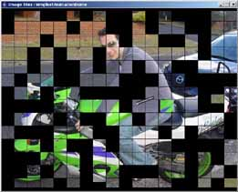

 This page contains all the current deliverables of the Image Tiles project.
To see what Image Tiles is capable of, visit the Screenshots & Demos page.
Full Release
Screensaver
JARs
Documentation
Source
Libraries
The Full Release includes the core + swing jars, demos, screensaver, libraries, full source code and generated API documentation.
Full Release: imageTiles-0.3b.zip (1,484 K)
This distribution contains software libraries made available under the Lesser GNU Public License. In order to comply with this license, the sources of those libraries are available for download in the Libraries section.
The Readme contains important information about the latest release.
Readme: README.txt (4 K)
The screensaver release includes only the components required to install and run the screensaver, plus the licences for those components.
Windows Screensaver: imageTiles-screensaver-win32.zip (165 K)
Unix/Linux Screensaver:
A Unix/Linux distributable of the screensaver is waiting on the final release of the next version of
the Saverbeans API and, as such, is not currently avaiable.
You can, however, download and install a unix version of the screensaver with the
Full Release.
This distribution contains software libraries made available under the Lesser GNU Public License. In order to comply with this license, the sources of those libraries are available for download in the Libraries section.
All the downloads in this section are included in the Full Release.
To develop applications that include Image Tiles components, you need the following JARs.
If you are going to download and distribute these JARs, make sure you also download the license
Core Classes: imageTiles-core.jar (50 K)
Swing Classes: imageTiles-swing.jar (16 K)
Readme: README.txt (3 K)
License: LICENSE.txt (12 K)
API Documentation: Browse Online | Download (433 K)
You can download the full source code of Image Tiles.
Note that the source code is also covered by the license.
You may need some libraries in order to build some parts of Image Tiles.
Full Source Code: imageTiles-src.zip (170 K)
Full Release: image-tiles-0.2a.zip (970 K)
Some components of Image Tiles use the following libraries, which are availabe for download here in accordance with their open-source licences. These libraries are all included in the Full Release.
Source code for the libraries is available for download where this is required by the license of the library.
Explicit Layout
Library: elcore.jar (18 K)
Source: explicit_3_0.zip (393 K)
Copyright © 2001 Zooki Technologies. All rights reserved.
Website: http://www.zookitec.com/
License: LGPL (see LGPL.txt)
Explicit Table Layout
Library: explicit-tablelayout-0.1.16.jar (32 K)
Source: explicit-tablelayout-0.1.16-src.jar (48 K)
Copyright © 2004 Andrew Pietsch. All rights reserved.
Website: http://pietschy.org/
License: LGPL (see LGPL.txt)
JGoodies Looks: Plastic Look & Feel
Library: plastic-1.2.1.jar (230 K)
Copyright (c) 2001-2004 JGoodies Karsten Lentzsch. All rights reserved.
Website: http://looks.dev.java.net/
License: BSD-Style (see JGoodies_License.txt)
JDIC Screensaver Development Kit ("Saverbeans")
Library: saverbeans-api.jar (28 K)
Source: saverbeans-sdk-0.1.1-src.tar.gz (57 K)
Copyright (c) 2001-2004 JGoodies Karsten Lentzsch. All rights reserved.
Website:
https://jdic.dev.java.net/documentation/incubator/screensaver/index.html
License: LGPL (see LGPL.txt)
Copyright (c) 2004, Graham Lea. All rights reserved.